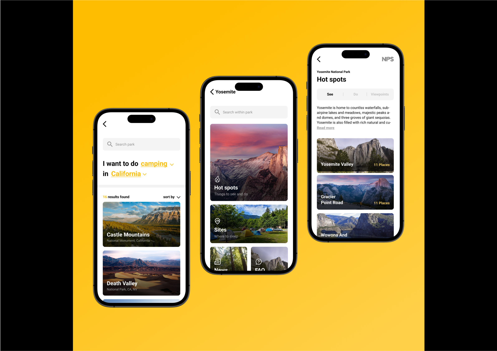
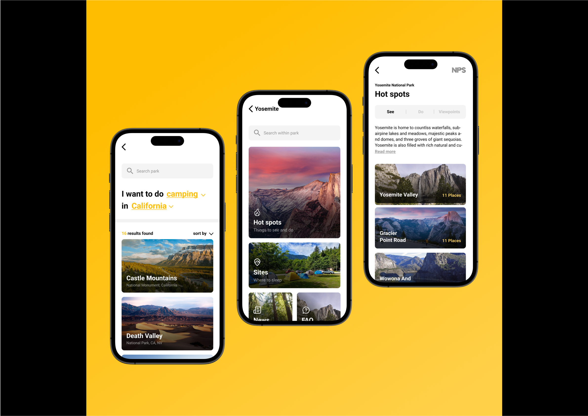

methods
- Brainstorming
- Figma prototyping
- Environmental work
- Sustainability aspects
- Storyboard
- Desktop research
deliverables
- User journey of current state
- A brand new concept: Share by Volvo
- Research on financial impact of the solution, both for project owner and customers
- Wireframes and prototype, to be used as a base of discussion for further development
- A presentation of the final design for stakeholders at Volvo
background
The automobile industry is currently going through large
changes in relation to sustainable production, moving from
selling products to selling a service, and changing views of
ownership. Our mission was to examine ways in which Volvo
could work with these changes and develop a service that
aligns with Volvos values and provides a service that is
environmentally, socially and economicaly sustainable. Our
work led to a completely new concept, called Share by Volvo.
This shared-subscription model solves several issues related
to automobile ownership, enabling users to only subscribe to
a car as much or little as they need to.
As one of five UX Designers and UX Researchers, I was responsible for conducting brainstorming
sessions, creating prototypes in Figma, integrating environmental and sustainability considerations,
developing storyboards, and performing desktop research. My focus was on ensuring the design aligned
with Volvo’s values and addressed the needs of future users.
who will use the service?
Anna, our persona from the (near) future, was created early on in the project to guide future
decisions
and ensure we always kept our main stakeholder in mind. Anna is a representation of many different
Volvo
users, fused together into one dynamic person. She is the result of both our own user research and
Volvo's user data. Anna is also designed to describe the needs of users in the near future, in modern
societies.
The service will be used by people who don’t need a car every day, but whose lives could be
made
easier by having one sometimes. Single-parent households, students, flex- workers, and people living
in
urban environments close to work are some of our primary stakeholders, as their needs fit well into a
sharing economy.
what will the future look like?
Before developing the service, we chose to focus on imagining what societies might look like in the
near
future. This would help us figure out how car ownership might fit into this reality. Anticipating an
increase in remote work, we foresee a shift in the way people live and work. The trend of urban
migration also suggests a higher concentration of people living in close proximity. Additionally,
despite the initial higher cost, we expect electric cars to become more prevalent.
In light of these factors, questions arise about traditional car ownership. Does everyone
truly
need full-time access to a personal car? What if the cost of individual ownership is prohibitive?
Could
neighbours share a car? With these considerations in mind, our focus turned towards creating a
platform
where people can manage ownership, participate in the sharing economy, and book cars as needed. Such a
platform has the potential to save time and money, reduce the need for extensive parking
infrastructure,
and contribute to environmental well-being.
economic sustainability
Through desktop research on economic sustainability and the sharing economy, we developed a subscription model based on usage. The idea was that if you only needed a car once a week, you shouldn’t have to pay for the other six days. This concept became the foundation for "Share by Volvo." Our final design introduced a flexible subscription model where users could purchase shares of a car based on their needs. For instance, a parent who requires a car only 50% of the time could subscribe accordingly, sharing ownership and paying proportionately less.

storyboarding
To illustrate user interaction with the service, we created a storyboard. This approach was used to demonstrate how the service could function in future scenarios, using conceptual visualization over a finished product. The storyboard depicted a user scenario of our persona Anna, sharing a car with neighbors.

final design
We created wireframes and prototypes in Figma to visualize how the service would work. These
prototypes included user interfaces for the subscription platform and mobile application, showcasing
features such as subscription management, communication tools for co-owners, and scheduling
capabilities. The prototypes were designed to be user-friendly and intuitive, focusing on ease of use
and accessibility.
The Share the Care model presents a thoughtful solution that addresses economic, social, and
environmental sustainability. By combining innovative subscription models, user-friendly interfaces,
and
an emphasis on community building, this project offers a holistic approach to redefining future car
subscriptions toward a more sustainable direction. To illustrate the concept, a storyboard, a report
and
mixed fidelity wireframes were delivered.
We also recognized the potential to expand the customer reach by introducing a flexible, shareable
subscription model. The traditional car subscription model often caters to individuals with higher
incomes, but by making car access more inclusive and economically viable for a broader audience,
including those with irregular or lower incomes, we aimed to broaden the appeal of the service.
We also addressed the varied needs of different user groups. Recognizing that not everyone requires
constant access to a car, our design allows for partial subscriptions. For instance, parents with
shared custody or individuals who work remotely can subscribe to a car only when needed, reducing
costs and optimizing resource use.


takeaways
One insight gained from this project is the importance of imposing creative limitations to facilitate a more efficient generation of ideas. Given Volvo's robust brand presence, clearly defined values, target audience, and established graphic profile, we had a well- defined scope to operate within. In many projects, it can be challenging to determine where to commence or which direction to explore when faced with numerous options. Employing a set of rules proved to be an effective method for concentrating on what can and should be accomplished. Additionally, this project served as a valuable exercise in creativity, as we aimed to conceptualize an entirely new idea within the established scope rather than merely enhancing an existing concept.


 
